Pick a direction
Same content and fixture data in every option (see design/BRIEF.md). Desktop 1280px on the left, mobile 375px in the middle. Regenerate the shots with node design/render-previews.mjs.
Landing page
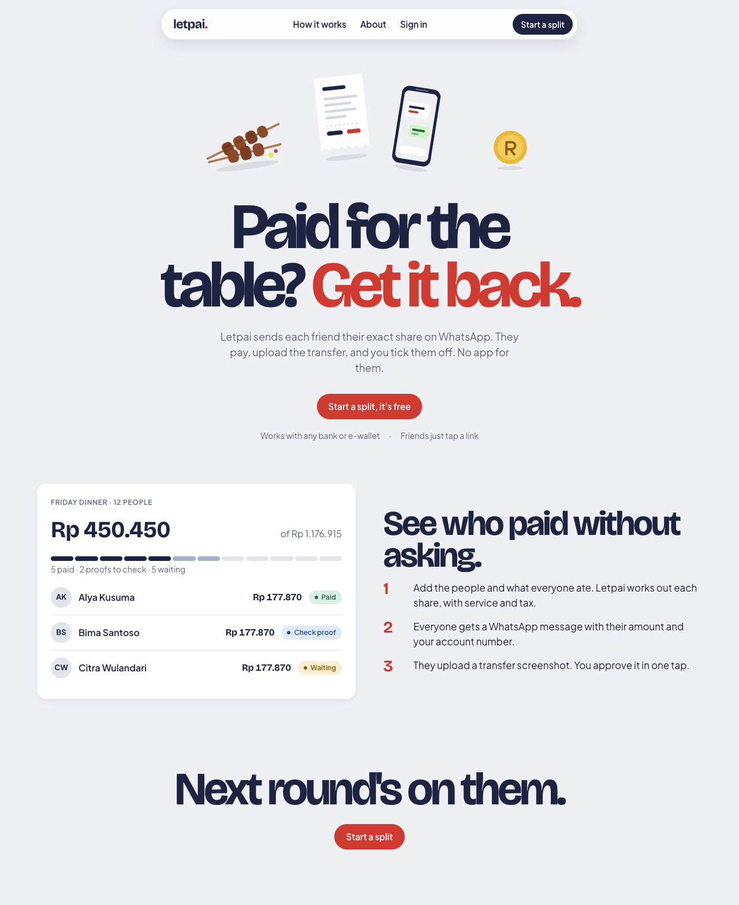
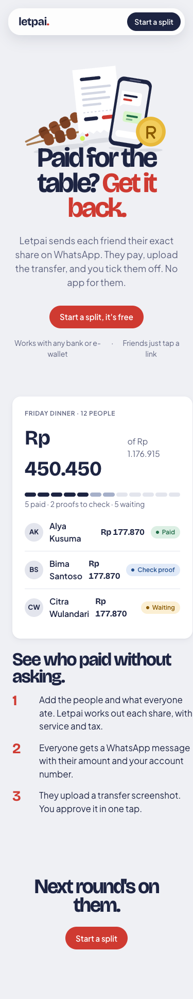
- Reading order
- Object cluster, centred 100px headline, one CTA, then a session card beside three numbered lines.
- Distinctive choice
- Closest to Fold: centred poster headline with floating satay, receipt, phone and coin.
- Trade-off
- Faithful to the reference, so it is the least "Letpai". The numbered steps drift back toward a template.
- Open
A · Poster
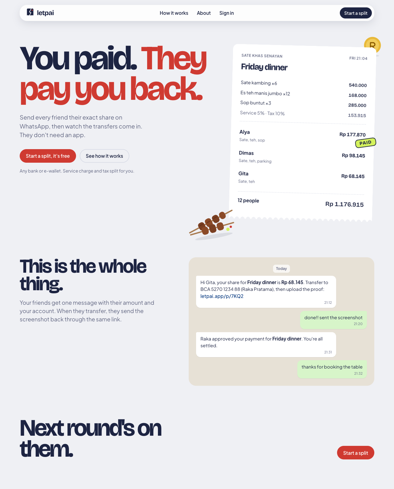
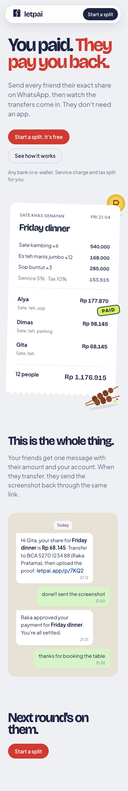
- Reading order
- Left-aligned poster line, CTA, then a tilted torn receipt with per-person shares and the one lime Paid stamp. "How it works" is a real-looking WhatsApp thread.
- Distinctive choice
- The receipt is the evidence: it shows the product doing the maths, not a feature list.
- Trade-off
- Asymmetric hero needs care on tablet widths; the receipt stacks under the headline on mobile.
- Open
B · Receipt Recommended
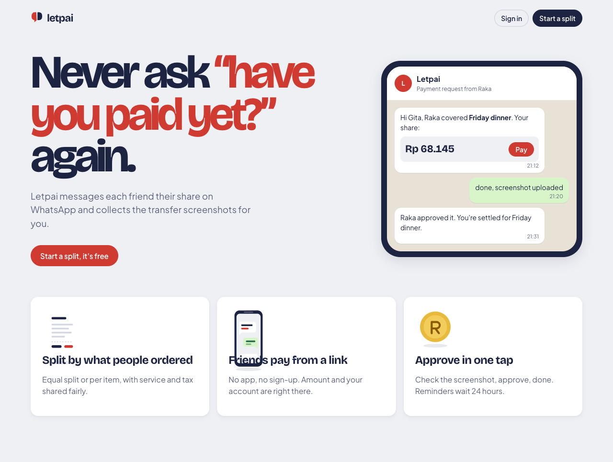
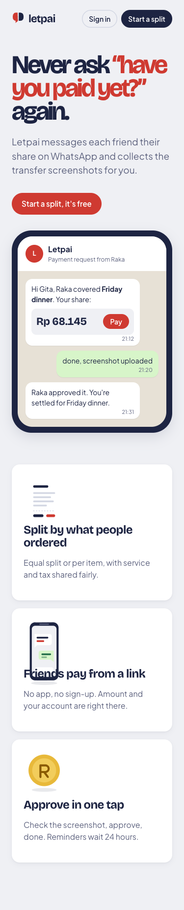
- Reading order
- Quote headline, CTA, a phone frame with the WhatsApp request, then three illustrated cards.
- Distinctive choice
- Leads with the participant's experience instead of the host's.
- Trade-off
- The three-card strip is the familiar SaaS pattern we are trying to leave; hosts are the ones signing up.
- Open
C · Chat
Session detail
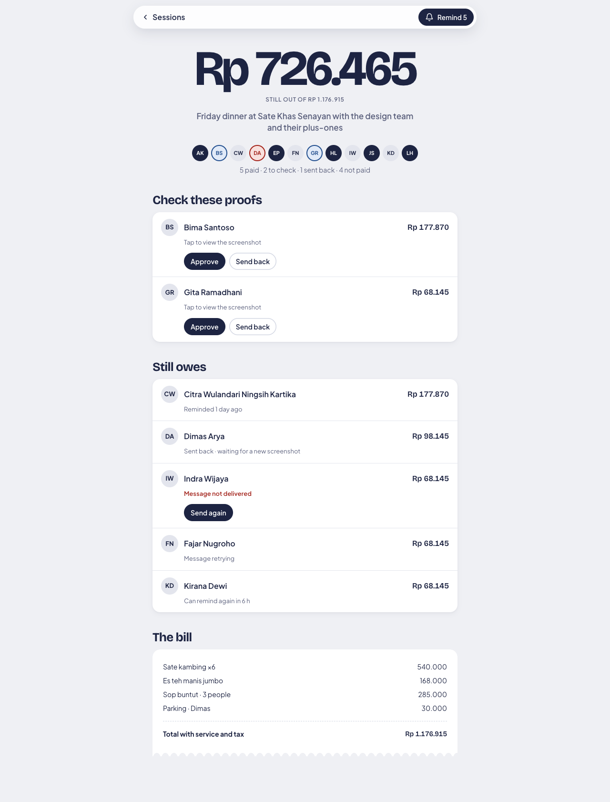
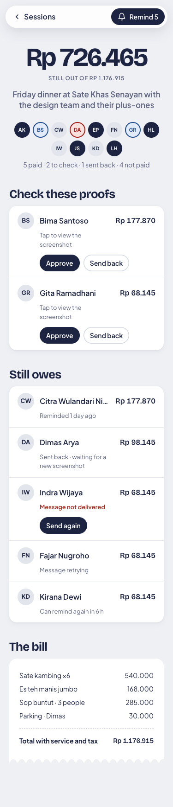
- Reading order
- Huge outstanding amount, faces coloured by status, proofs, still owes, the bill.
- Primary action
- Sticky "Remind 5" in the floating top bar.
- Trade-off
- Beautiful on mobile, but desktop wastes width and the bill, accounts and photos fall far below.
- Open
A · Poster column
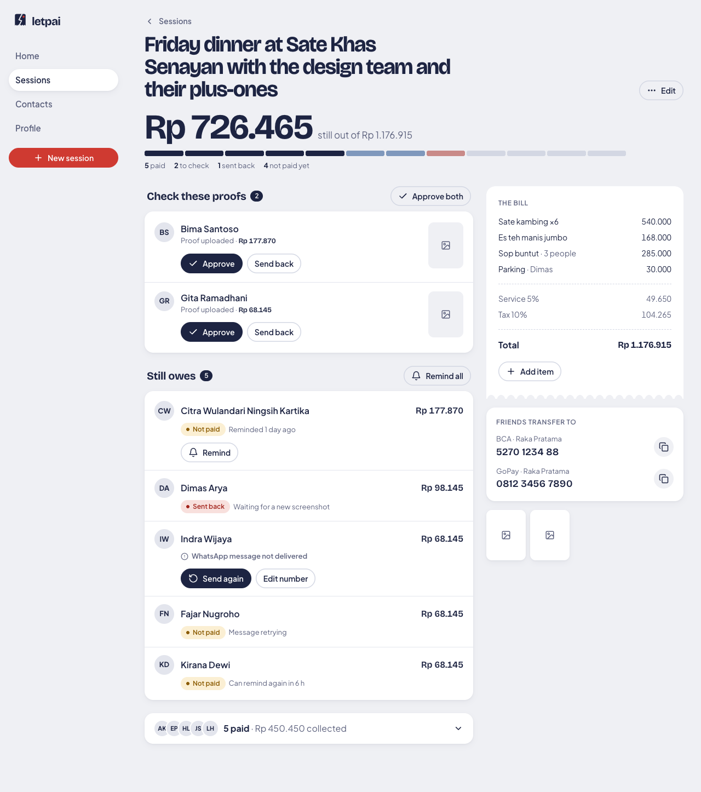
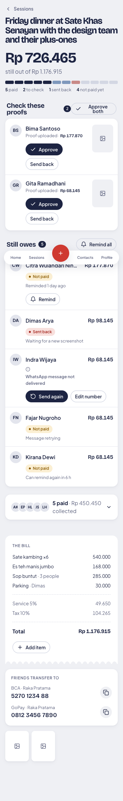
- Reading order
- Title, outstanding amount, segmented bar (one segment per person), then "Check these proofs" and "Still owes" with inline actions. Paid people collapse into one row.
- Desktop
- The bill sits as a torn receipt in a second column with transfer accounts and photos.
- Mobile
- Same queue first; receipt, accounts and photos follow. Approve, send back, remind and retry are all above the receipt.
- Trade-off
- Two columns mean the page is split into components; behaviour stays, layout code changes a lot.
- Open
B · Queue and receipt Recommended
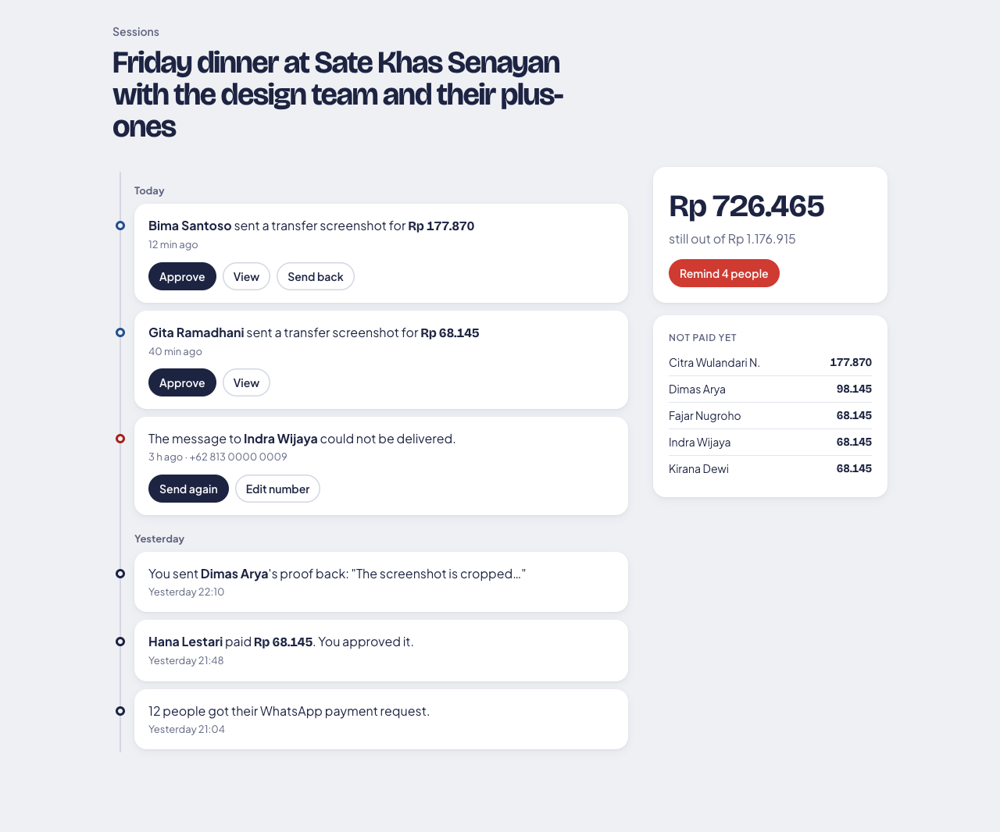
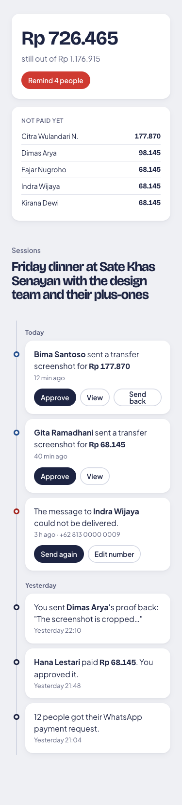
- Reading order
- A feed of events (proof sent, message failed, payment approved) with actions on each event.
- Trade-off
- Needs event timestamps the backend does not expose today (no proof-upload time, no activity log), so it would require backend work. Harder to compare people side by side.
- Open
C · Activity timeline
Logo
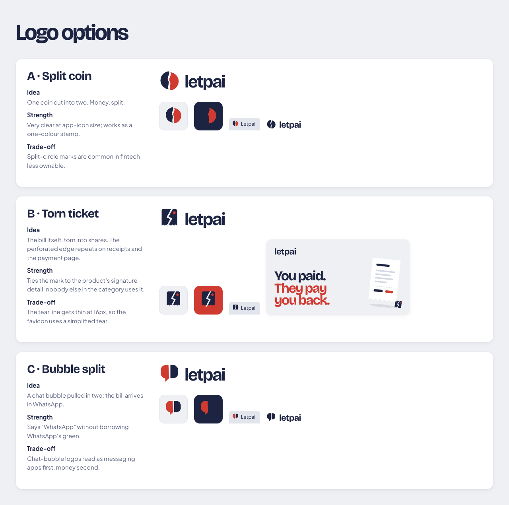
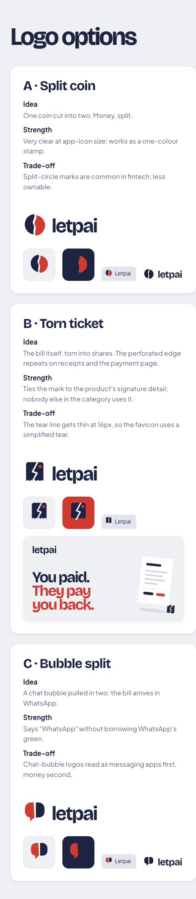
- It repeats the perforated receipt edge used in the bill and the payment page, so the brand and the product share one detail. A is clearer but generic; C reads as a messaging app.
- Open